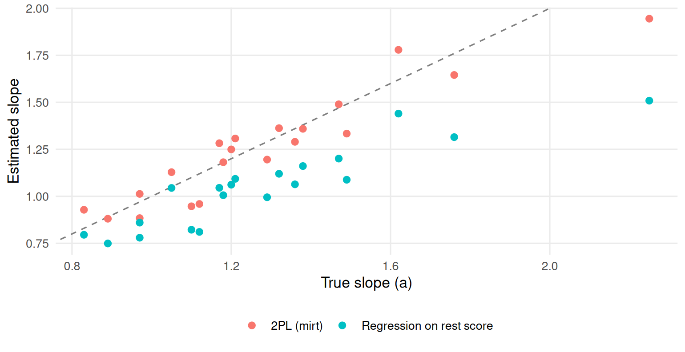

Chapter 13 Machine learning through an IRT lens
Learning goals. After this chapter you can
- explain the difference between a prediction model and a measurement model, and say what each can and cannot claim;
- show that a 2PL item response function is a logistic regression on a latent predictor, and what goes wrong when an observed score stands in for it;
- estimate how well a model predicts new cases with cross-validation, and recognize overfitting;
- explain why a single IRT score often predicts better than all the item responses fed to a flexible model.
Key terms: machine learning, feature, overfitting and cross-validation, latent trait. The translation table pairs many more machine learning words with their psychometric relatives.
13.1 The ideas
Machine learning (ML) is a set of methods for learning a rule that predicts an outcome from data. It is judged by one question: How well does the rule predict cases it has not seen? Breiman (2001) called this the algorithmic culture of statistics, in contrast to the data modelling culture that psychometrics grew up in, where a model is a claim about how the data arose and its parameters mean something.
An IRT model makes such a claim. The 2PL says that the chance of a correct answer depends on one unobserved trait through a logistic curve whose slope and location are properties of the item. That is a logistic regression, with one twist: The predictor \(\theta\) is never observed. Everything that makes IRT useful follows from taking that claim seriously: Item parameters that do not depend on who took the test, a standard error for every score, information to design tests with, and checks of fit that can reject the model.
A prediction model makes a weaker promise. It does not say why the outcome happens, only that its rule will predict well in data like the training data. In exchange it can use any predictors (features) in any flexible form. Two habits of ML are worth taking home even if you never fit a neural network:
- Hold data out. A model always fits the data it was estimated on better than new data, and a flexible model can fit noise. This is overfitting, and the cure is to judge a model on data it did not see. Cross-validation splits the data into k parts (folds), fits the model on \(k - 1\) of them, predicts the one left out, and repeats until every case has been predicted once (James et al. 2021).
- Shrink. Penalizing large coefficients (ridge, lasso) trades a little bias for a large cut in variance. It is the same idea as a prior on item parameters, or as MAP and EAP scoring pulling extreme scores toward the mean.
Yarkoni and Westfall (2017) make the case that psychology should care more about prediction. The examples below show the reverse lesson as well: A good measurement model is itself a very effective way to predict.
13.2 Example 1: The 2PL is a logistic regression on theta
We simulate 20 items answered by 2,000 test takers whose true abilities we keep, so we can do something impossible with real data: Regress each item on the true \(\theta\).
# Simulated 20-item test with known abilities and item parameters.
set.seed(1313)
n <- 2000
theta <- rnorm(n)
a <- round(rlnorm(20, log(1.3), 0.3), 2)
b <- round(sort(rnorm(20, 0, 1)), 2)
p <- plogis(outer(theta, a) - matrix(a * b, n, 20, byrow = TRUE))
resp <- as.data.frame((matrix(runif(n * 20), n) < p) * 1L)
names(resp) <- sprintf("Q%02d", 1:20)A logistic regression of item 5 on the true \(\theta\) estimates its slope and intercept directly; on the logit scale the intercept is \(-ab\):
fit5 <- glm(resp$Q05 ~ theta, family = binomial)
c(slope = unname(coef(fit5)[2]), b = unname(-coef(fit5)[1] / coef(fit5)[2]),
true_a = a[5], true_b = b[5])
#> slope b true_a true_b
#> 1.328 -0.139 1.210 -0.190With real data we do not have \(\theta\). The obvious stand-in is the sum score. Doing the same regression on the standardized rest score (the sum of the other 19 items) gives slopes that are on average about a fifth too flat, because the rest score measures \(\theta\) with error (Figure 13.1). IRT avoids this by estimating \(\theta\) and the item parameters together:
mod <- mirt(resp, 1, itemtype = "2PL", verbose = FALSE)
est <- coef(mod, IRTpars = TRUE, simplify = TRUE)$items
slope_obs <- sapply(1:20, function(j) {
rest <- scale(rowSums(resp[, -j]))
coef(glm(resp[[j]] ~ rest, family = binomial))[2]
})
round(c(true = mean(a), irt = mean(est[, "a"]), rest_score = mean(slope_obs)), 2)
#> true irt rest_score
#> 1.28 1.26 1.05slopes <- rbind(data.frame(true = a, estimate = est[, "a"], method = "2PL (mirt)"),
data.frame(true = a, estimate = slope_obs, method = "Regression on rest score"))
ggplot2::ggplot(slopes, ggplot2::aes(true, estimate, colour = method)) +
ggplot2::geom_abline(linetype = 2, colour = "grey50") +
ggplot2::geom_point(size = 2) +
ggplot2::labs(x = "True slope (a)", y = "Estimated slope", colour = NULL) +
theme_mirtverse()
Figure 13.1: Item slopes estimated by the 2PL and by logistic regression on the standardized rest score, against the true slopes. The dashed line marks perfect recovery.
The lesson carries over to every ML model that uses test scores as features: An observed score is a noisy measure of the trait, and models that ignore the noise underestimate how strongly the trait relates to anything else.
13.3 Example 2: Forty items or one score?
A university wants to predict which applicants will pass a first-year statistics course from a 40-item placement test. We simulate 400 past students whose course result depends only on their ability, plus noise.
# Simulated 40-item placement test and a pass/fail course outcome.
set.seed(2027)
n <- 400
ability <- rnorm(n)
a2 <- rlnorm(40, log(1.1), 0.3)
b2 <- rnorm(40, 0, 1)
p2 <- plogis(outer(ability, a2) - matrix(a2 * b2, n, 40, byrow = TRUE))
resp <- as.data.frame((matrix(runif(n * 40), n) < p2) * 1L)
names(resp) <- sprintf("P%02d", 1:40)
passed <- rbinom(n, 1, plogis(1.6 * ability + 0.3))The ML approach feeds all 40 item responses to a classifier as features. The measurement approach first summarizes them in one IRT score and uses only that. Both are logistic regressions here, so the comparison is about the features, not the algorithm. We judge each by its accuracy on the data it was fitted to and with 10-fold cross-validation:
theta_hat <- fscores(mirt(resp, 1, verbose = FALSE))[, 1]
dat <- data.frame(passed, theta_hat, resp)
accuracy <- function(fit, newdata)
mean((predict(fit, newdata, type = "response") > 0.5) == newdata$passed)
cv <- function(formula, k = 10) {
fold <- sample(rep(1:k, length.out = nrow(dat)))
mean(sapply(1:k, function(f) {
fit <- suppressWarnings(glm(formula, binomial, data = dat[fold != f, ]))
accuracy(fit, dat[fold == f, ])
}))
}
items_formula <- reformulate(names(resp), "passed")
set.seed(1)
data.frame(
features = c("40 item responses", "one IRT score"),
training_accuracy = c(accuracy(suppressWarnings(glm(items_formula, binomial, data = dat)), dat),
accuracy(glm(passed ~ theta_hat, binomial, data = dat), dat)),
cv_accuracy = c(cv(items_formula), cv(passed ~ theta_hat)))
#> features training_accuracy cv_accuracy
#> 1 40 item responses 0.787 0.720
#> 2 one IRT score 0.735 0.742On the training data the 40-item model looks better: With 41 coefficients it can fit some of the noise. Cross-validation tells the truth. On new students it does worse than the single score, because the IRT model has already done what a good ML pipeline would have had to learn: That the items measure one thing and should be combined with weights close to their discriminations. A measurement model is a strong, theory-based form of regularization.
This is not an argument against ML. With thousands of students, features that carry information beyond the trait (response times, the text of answers), or an outcome that depends on more than one trait, a flexible model may well win. The point is to compare on held-out data and to know what each approach is claiming.
13.4 Your turn
- In Example 1, repeat the rest-score regression using the EAP score from
fscores(mod)instead of the rest score. Are the slopes closer to the truth? Why not? - In Example 2, change
nto 2,000 in the data chunk and run the comparison again. What happens to the gap between the two approaches, and why? - Shrinking the 40 item coefficients toward a common value reduces
overfitting; giving every item the same weight, the proportion correct
rowMeans(resp), is the extreme case. How does a model on the proportion correct do under cross-validation in Example 2? - A vendor reports that their ML model “predicts course success with 82% accuracy” from your placement test items. Write three questions you would ask before believing it.
Solutions
# 1. the same regression on the EAP score of Example 1
resp1 <- extract.mirt(mod, "data")
eap <- fscores(mod)[, 1]
slope_eap <- sapply(1:20, function(j) coef(glm(resp1[, j] ~ eap, family = binomial))[2])
round(c(true = mean(a), eap = mean(slope_eap)), 2)
#> true eap
#> 1.28 1.56
# 3. equal weights: the extreme form of shrinkage
dat$prop <- rowMeans(resp)
set.seed(1)
cv(passed ~ prop)
#> [1] 0.74- Now the slopes are too steep on average. EAP scores are shrunk toward the mean, so their spread is smaller than \(\theta\)’s and each unit of EAP corresponds to more than one unit of \(\theta\); and each item’s own response helped compute the EAP score it is regressed on. An estimated score is not \(\theta\), whichever way you compute it; that is why IRT estimates the item parameters and the trait distribution together.
- With 2,000 students the 40-item model has more data per coefficient, so it overfits less and the cross-validated gap narrows. It still rarely beats the IRT score, because the outcome depends only on the trait.
- The proportion correct does about as well as the IRT score under cross-validation: Equal weights are a strong form of shrinkage and lose little when the items’ discriminations are similar.
- For example: Was the 82% computed on students who were not used to train the model? What is the accuracy of predicting from the total score alone, or of predicting that everyone passes? Is the accuracy similar for subgroups of students, such as English language learners?
In the AI Hub
The AI Hub has a learning path through AI in measurement, and its translation table lists the ML terms used in this chapter with their psychometric relatives.